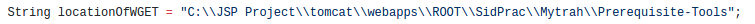

Installation Steps
Note : Installation steps are specific to Windows OS
1. Make sure that you have installed Apache Tomcat server, if not then click here
2. Change to the following working directory in Apache Tomcat server
$cd tomcat/webapps/ROOT
3. Now paste the Mytrah-Web-App folder in this location. This is the folder that contains all the back-end code needed for the working of the app.
4. In this same working directory paste another folder i.e. WEB-INF. You will find this folder inside the Apache-Tomcat-WEB-INF folder. This folder cotainer all the .jar files which in turn contain all the .class files needed by the JSP pages in the app.
The folder in step 2. should now contain the Mytrah-Web-App and the WEB-INF folders.
5. Now cd to any location on your file system (your choice) and paste the Prerequisite-Tools folder there. This folder contains all the major commands as executable scripts needed by the terminal a.k.a. command prompt. These are used by the back-end code present in the Mytrah-Web-App folder.
6. The only major step now left, is to 'tell' the Mytrah-Web-App folder files, where the Prerequisite-Tools folder is present. For this, we need to make changes to 2 files.
cd to the Mytrah-Web-App folder and open the UsingDATFile.jsp file.
$cd tomcat/webapps/ROOT/Mytrah-Web-App
In line number 15, change the value of the locationOfWGET String variable. This value should be equal to the location of the Prerequisite-Tools folder.

Note that the back-slash needs to be 'escaped' by replacing the \ with \\. Spaces are left as it is.
e.g.
C:\JSP Project\tomcat\webapps\ROOT\SidPrac\Mytrah\Prerequisite-Tools
Becomes
C:\\JSP Project\\tomcat\\webapps\\ROOT\\SidPrac\\Mytrah\\Prerequisite-Tools
In line number 16, change the value of the locationOfWGETPowerShell String variable. This value should also be equal to the location of the Prerequisite-Tools folder. But here along with escaping the \, the spaces should also be taken care of using simgle quotes (''). Simply replace appropriate folder name with spaces with 'folder name with spaces'

e.g.
C:\JSP Project\tomcat\webapps\ROOT\SidPrac\Mytrah\Prerequisite-Tools
Becomes
C:\\'JSP Project'\\tomcat\\webapps\\ROOT\\SidPrac\\Mytrah\\Prerequisite-Tools
The reason for this is that CMD and Powershell work differently with location names.
7. Make similar changes to the UsingERA.jsp file which is also present in the same folder.
In line number 35, change the value of the locationOfWGET String variable. This value should also be equal to the location of the Prerequisite-Tools folder.

Note that the back-slash needs to be 'escaped' by replacing the \ with \\. Spaces are left as it is.
e.g.
C:\JSP Project\tomcat\webapps\ROOT\SidPrac\Mytrah\Prerequisite-Tools
Becomes
C:\\JSP Project\\tomcat\\webapps\\ROOT\\SidPrac\\Mytrah\\Prerequisite-Tools
8. Please ensure that the PATH and CLASS-PATH environment variables are set properly to point to the installed java jdk. Usually, these are already set by default and nothing additional needs to be done.
9. Please read the DEFAULTS section in this documentation before proceeding.
10. You are now good to go! The app can be used at :
localhost:<port for Apache>/Mytrah-Web-App/index.html